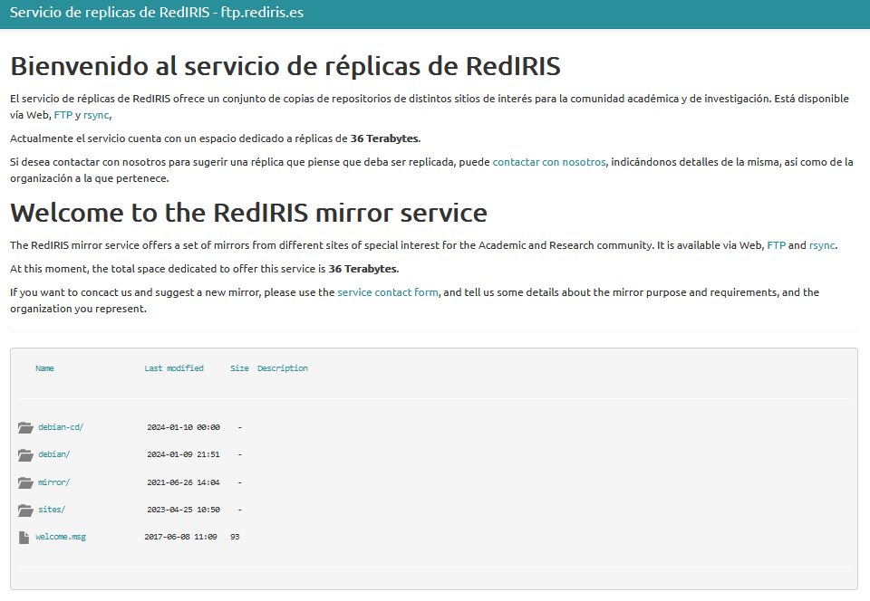

Servicio de Transferencia de Archivos desde el Navegador
Uso del navegador como cliente FTP
1.10. Servicio de transferencia de archivos desde el navegador
El navegador web también puede ejercer de cliente ftp y, puesto que la mayoría de los sistemas operativos cuentan con un navegador en su instalación, es una de las herramientas más usadas para transferencia de archivos.
Para poder usar el navegador como cliente ftp solamente debes escribir en la barra de dirección una dirección URL tipo, como la siguiente:
ftp://nombre_servidor_ftp:puerto
donde,
- ftp:// indica que el protocolo que deseas que interprete el navegador sea el ftp.
- nombre_servidor_ftp representa el nombre o la IP del servidor ftp.
- puerto indica el puerto TCP, por defecto 21. Puedes omitirlo siempre y cuando sea el 21.
Si el servidor ftp permite la conexión a un usuario anónimo, al ejecutar ftp://nombre_servidor_ftp:puerto entrarás directamente al servidor ftp, esto es, el navegador no preguntará qué usuario y contraseña necesitas para establecer la conexión.
En la siguiente imagen puedes ver como puedes acceder al servidor ftp de rediris utilizando el navegador:
Así, lo único que tienes que hacer es escribir en la dirección URL: ftp://ftp.rediris.es y pulsar Enter, con lo cual, automáticamente, conectas con el servidor ftp, pudiendo visitar las carpetas y ver los ficheros como si de un explorador de archivos se tratará.
Para descargar las carpetas o archivos simplemente debes pulsar con el botón derecho del ratón sobre ellos y elegir la opción Guardar enlace como… -que aparece en Firefox y es similar en otros navegadores-.
Pero no todo van a ser ventajas al utilizar el navegador como cliente ftp, puesto que otros clientes tienen la posibilidad de continuar las descargas cuando estás sufrieron algún tipo de interrupción, cosa que no pasa con el cliente ftp del navegador, como por ejemplo el cliente gráfico FileZilla que soporta y reanuda la transferencia de archivos de gran tamaño(> 4 GB).